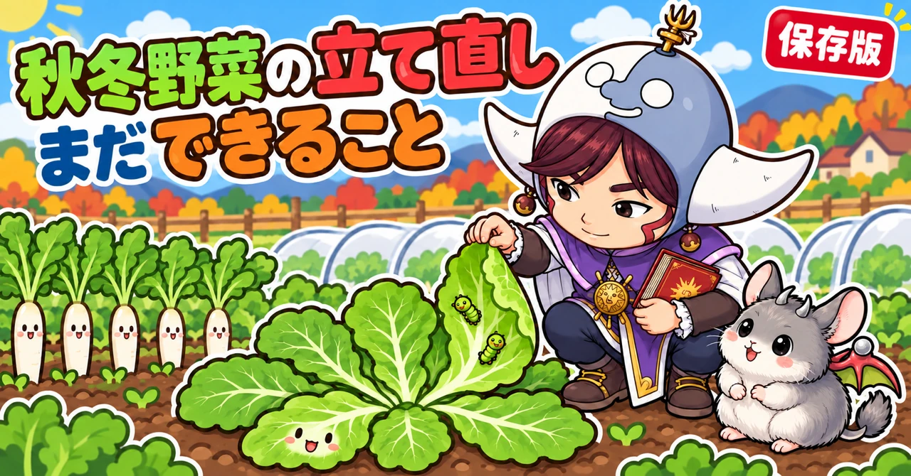
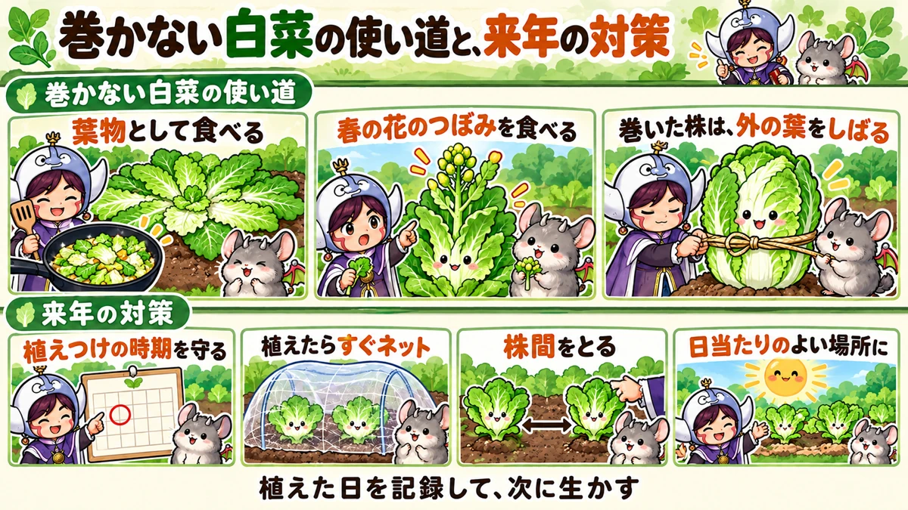

秋冬野菜の育ちが悪いときの立て直し決定版｜白菜が巻かない、大根が太らない、葉物が大きくならないときにまだできること

📖 この記事の目次
この記事で分かること
- 秋冬野菜の育ちが悪い原因は、大きく分けて4つあります。植えつけやタネまきの遅れ、肥料の過不足、虫の食害、そして寒さです。中でもいちばん多いのが、植えつけの遅れです。
- 白菜やキャベツは、巻きはじめるまでに外の葉が十分に育っている必要があります。外の葉が少ないまま寒くなると、巻かずに終わります。
- 気温が下がると、野菜の育ちはどんどんゆっくりになり、一般に日中の気温が10℃を下回る日が続くと、ほとんど止まってしまうと言われます。
- 立て直しの基本は、虫を探して取る、トンネルや不織布で温める、液肥で肥料を補う、の3つです。温める前に、必ず虫を取ります。
- どうしても巻かない白菜は、葉物として食べる、春に伸びる花のつぼみを食べる、という楽しみ方もあります。
- 外の葉は、光合成の工場です。枯れていない外の葉を取ってはいけません。
11月に入ったのに、白菜がまったく巻く気配がない。大根の葉はりっぱなのに、根が細いまま。ブロッコリーの花のつぼみが、500円玉くらいの大きさから大きくならない。秋冬野菜の育ちが悪いと、「今年はもうだめかな」と思ってしまいます。
けれども、まだできることはあります。この記事では、秋冬野菜の育ちが悪い原因の見分け方から、まだ間に合う立て直しの方法、どうしても間に合わないときの食べ方、来年に向けての対策まで、順番に書いていきます。
早見：育ちが悪い原因と立て直し
1. 植えつけやタネまきが遅れた
- しるし：株全体が小さく、外の葉の枚数が少ない。まわりの同じ野菜より明らかに小さい
- 立て直し：トンネルや不織布で温め、少しでも育つ時間をのばす。間に合わなければ、葉物として食べる
2. 肥料が足りない
- しるし：下の葉から黄色くなる。新しい葉の色もうすい
- 立て直し：寒くなりきる前に、液肥で補う
3. 肥料が多すぎる
- しるし：葉の色が濃く、葉ばかり大きく茂って、巻かない、太らない
- 立て直し：肥料をやめる。追肥は控える
4. 虫に食べられた
- しるし：葉に穴、ふんが落ちている。白菜やキャベツの中心が食べられている
- 立て直し：葉の裏や株元を探して、虫を取る。中心を食べられた株は、植え直しや別の使い道を考える
5. 寒さで育ちが止まった
- しるし：寒くなってから、目に見えて育たなくなった
- 立て直し：トンネルで温める。日中の温度を上げることを優先する
6. 日当たりが悪い
- しるし：建物や木の陰で、昼すぎには日が当たらなくなる
- 立て直し：その季節は温めて補う。次の年は植える場所を変える

原因をしぼりこむ手順
1. 植えた日を思い出す
栽培日誌やカレンダー、苗を買ったときのレシートなどで、植えつけやタネまきの日を確かめます。その野菜の植えつけの目安より、1〜2週間以上遅れていたら、遅れが大きな原因と考えられます。
2. まわりの株と比べる
同じ畝の同じ野菜で、育ちのよい株と悪い株があるなら、株ごとの原因（虫、苗の弱さ、日当たりのちがい）を疑います。畝全体がそろって育ちが悪いなら、植えつけの時期や、肥料、寒さなど、畝全体にかかわる原因を疑います。
3. 葉の色を見る
下の葉から黄色い、新しい葉の色もうすい、なら肥料不足。色が濃く葉ばかり茂っているなら、肥料のやりすぎ。色はふつうで、ただ小さいなら、遅れや寒さを疑います。
4. 葉の裏と株元を見る
穴やふんがあれば、虫がいます。白菜やキャベツは、中心が食べられていないかも確かめます。
5. 日当たりの時間を確かめる
冬は太陽が低くなるので、建物や木の陰が長くのびます。午前と午後に畑を見て、何時ごろから日陰になるかを確かめます。夏には気にならなかった陰が、冬には大きな原因になることがあります。
6. 土の湿り気を確かめる
株元から少し離れたところを指で掘り、土がいつも湿っていないかを見ます。冬に水をやりすぎていると、根が弱って育ちが止まることがあります。
なぜ秋冬野菜は、遅れると取り返しにくいのか
育つ期間が、どんどん短くなる
夏野菜は、暑くなるほど勢いよく育ちます。ところが秋冬野菜は、植えつけたあと、日に日に気温が下がっていく中で育ちます。植えつけが1〜2週間遅れただけで、暖かいうちに育てられる期間がそのぶん短くなり、寒くなる前に十分な大きさになれません。秋冬野菜は、最初の育ちがとても大切なのです。
白菜やキャベツは、巻くための葉の数が必要
白菜やキャベツが巻くには、その前に、外側の葉がしっかり育っている必要があります。外の葉が光を受けて栄養を作り、その栄養で中の葉が巻いていきます。外の葉が20枚ほどに育っていることが、巻くための目安と言われます。寒くなる前にこの数に届かないと、巻かずに終わってしまいます。
巻くには、ある程度の温度が必要
白菜が巻くのに向いた温度は、15℃前後と言われます。気温がこれより下がると、巻く力が弱まり、さらに寒くなると育ちそのものが止まります。植えつけが遅れた白菜が巻かないのは、巻く準備ができたころには、もう寒くなってしまっているからです。
寒くなると、育ちはどんどん遅くなる
野菜は、気温が下がるほど育ちがゆっくりになります。日中の気温が10℃を下回る日が続くと、白菜などの葉物は、ほとんど育たなくなると言われます。12月に入ると、結球が足りない白菜が、そこから大きく巻くことは期待しにくくなります。
立て直し1：まず虫を探す
なぜ、最初に虫なのか
立て直しのために温めると、野菜だけでなく、虫にとっても過ごしやすくなります。虫が残ったままトンネルをかけると、中で虫が増えて、かえって被害が広がります。温める前に、必ず虫を探して取り除きます。
どこを探すか
- 葉に穴があいている、ふんが落ちている株は、必ず虫がいる
- 白菜やキャベツは、内側の葉から1枚ずつそっとめくって見る。中心近くに穴がなければ、虫は外側の葉の下にいることが多い
- 株元の枯れた葉の下、地面との境目も見る。ヨトウムシなどの幼虫は、昼は株元や葉の下に隠れていることが多い
ふんは、洗えば落ちる
葉にふんがついていても、洗えば落ちるので、その葉も食べられます。ふんがあるということは、近くに虫がいるしるしなので、見つかるまで探します。
中心を食べられた株
白菜やキャベツの中心（成長点）を食べられてしまうと、その株は巻くことも、大きくなることもできません。時期が間に合うなら、植え直したほうが早いこともあります。間に合わなければ、外の葉を葉物として食べます。
アブラムシも取ってから
寒くなると、アブラムシの動きも止まります。ところが、トンネルで温めると、また動きだして増えることがあります。温める前に、葉の裏や新芽のアブラムシも取っておきます。
立て直し2：温める
トンネルで温める
畝の上にトンネル用の支柱を立て、穴あきのビニールをかけると、中の温度が上がり、育ちを続けさせることができます。ビニールトンネルをかけた畝と、かけていない畝で、日が落ちてからの地温を測った例では、トンネルの中のほうが5℃ほど高かった、というものもあります。
不織布を重ねる
いちばん下に不織布をふわっとかけ、その上にビニールのトンネル、さらに防虫ネットをかける、というように何枚か重ねると、夜の冷えこみ（放射冷却）をさらに防げます。トンネルの中とビニールのあいだに不織布をもう1枚はさむ方法もあります。
大事なのは、日中の温度
野菜が育つのは、主に日中です。夜だけ温めても、あまり効果はありません。日中にトンネルの中が温まるようにすることが大切です。ただし、晴れた日にトンネルを閉めきると、中が暑くなりすぎることがあります。穴あきのビニールを使うか、晴れて暖かい日は、すそを少し開けて風を通します。
背の高い野菜は
ブロッコリーやカリフラワーなど、背の高い野菜は、トンネルで全体を覆うのが難しいことがあります。その場合は、株の上から不織布をかけて、すそを押さえるだけでも、寒さをやわらげられます。
トンネルのかけかた
- トンネル用の支柱を、畝をまたぐように、同じ間隔でさしていきます
- 野菜の葉がビニールにふれないくらいの高さにします
- 穴あきのビニール（または不織布）を、支柱の上からかぶせます
- 両端と両わきのすそを、土をのせるか、専用の留め具で押さえて、風であおられないようにします
- 晴れて暖かい日は、すそを少し開けて、中が暑くなりすぎないようにします
風の強い日に作業すると、ビニールがあおられて飛ばされやすいので、風の弱い日に行います。
早めにかける
温めるのは、寒くなってからでは遅すぎることがあります。育ちが遅れていると気づいたら、気温が下がりきる前に、早めにトンネルをかけます。すでに大きく育っている株は、トンネルなしでもそのまま育っていくことが多いので、温めるのは育ちの遅れている株を優先します。

立て直し3：肥料を補う
肥料が足りないしるし
下の葉が黄色くなってきた、新しい葉も黄緑色、というのは、窒素が足りないときの典型的なしるしです。秋冬野菜の葉物や大根でよく見られます。
固形の肥料は、効くまでに時間がかかる
10月の後半から固形の肥料で追肥をしても、気温が下がって土の中の微生物の働きがにぶくなるため、効きはじめるまでに時間がかかります。効いてくるころには、もう育ちが止まる寒さになっていることもあります。
液肥で、早めに補う
急いで補いたいときは、液肥を使います。液肥は水に溶けているので、気温が低くても、根にすぐ届きます。薄めの液肥を、何回かに分けて与えます。気温が下がりきる前、できるだけ早く与えることが大切です。
結球する野菜は、窒素を控えめに
白菜やキャベツは、巻きはじめてから窒素が多すぎると、葉ばかり伸びて巻かないことがあります。巻く野菜には、窒素の多い液肥より、りん酸の多い鶏ふんの液肥などが向いています。
葉の色が濃いなら、与えない
葉の色が濃く、元気に茂っているのに巻かない、太らないという場合は、肥料不足ではありません。むしろ肥料が多すぎることも考えられるので、追肥はしないでおきます。
立て直し4：遅れている作業を取り戻す
間引きの遅れ
間引きが遅れて株が混みあっていると、葉が重なって日が当たらず、風通しも悪くなり、虫や病気が出やすくなります。株も小さいままです。遅れていると気づいたら、今からでも間引きます。根が絡みあっていて抜くと残す株まで抜けそうなときは、はさみで地際から切ります。間引いた株は、間引き菜として食べられます。
追肥の遅れ
秋冬野菜は、植えつけてから1か月ほどのあいだに一気に葉を広げます。この時期に追肥が遅れると、葉が大きくならず、巻くのも、つぼみができるのも遅れます。忘れていたら、寒くなりきる前に、液肥で補います。
草に埋もれていないか
秋の草は、冬に向けて地面に低く広がり、野菜の株元をおおってしまうことがあります。株元の草を取り、日当たりと風通しを取り戻します。
やりすぎていないか見直す
失敗の多くは、やりすぎ
野菜の育ちが悪いと、何かが足りないと考えがちです。けれども、秋冬野菜の失敗には、肥料や水のやりすぎによるものがたくさんあります。立て直しのために何かを足す前に、やりすぎていないかを確かめます。
肥料のやりすぎ
肥料、特に窒素が多すぎると、葉がやわらかく茂って、虫や病気を呼びやすくなります。葉ばかり育って巻かない、太らない、ということも起こります。玉ねぎは、肥料が多すぎると、春に花の茎が伸びてしまうことがあります。スナップエンドウやそら豆は、冬までに大きく育ちすぎると、寒さで傷みやすくなります。育ちが悪いからと、肥料を何度も足さないようにします。
水のやりすぎ
冬は、土が乾きにくく、野菜が吸う水も少なくなります。夏と同じ感覚で水をやり続けると、土がいつも湿って根が傷んだり、寒い夜に土が凍ったりします。畑では、マルチをしていれば、冬の水やりはほとんどいりません。
外の葉を取ってはいけない
外の葉は、栄養を作る工場
白菜やキャベツの外の葉が、横に広がってマルチの上にべったりついていると、じゃまに見えて取りたくなります。けれども、外の葉は、光を受けて栄養を作る工場です。外の葉を取ると、栄養が足りなくなり、巻くのに必要な力が弱まります。
取ってよいのは、枯れた葉だけ
黄色く枯れてきた葉や、病気の葉は取ってかまいません。緑色の元気な外の葉は、そのまま残します。
秋冬の虫を見逃さない
秋が暖かい年は、虫が長く続く
残暑が長い年は、10月の中ごろまで夏のように暖かく、虫の勢いがなかなか止まりません。ヨトウムシなど、葉を大きく食べるいも虫の被害が、例年より遅くまで続きます。
寒くても動く虫がいる
気温が下がっても、アブラムシやヨトウムシなど、寒さに比較的強い虫は活動を続けます。冬になったからと見回りをやめると、気づかないうちに被害が広がっていることがあります。
葉物は、被害が大きくなりやすい
秋冬野菜は、葉を食べる野菜が多いので、虫に食べられると、そのまま収穫量が減ります。食べる部分そのものが穴だらけになることもあります。
毎日の見回りがいちばんの対策
防虫ネットをかけていても、すき間から入りこんだり、苗といっしょに持ちこんだりすることがあります。こまめに見て、見つけた虫をその場で取ることが、いちばん確実な対策です。家庭菜園なら、自分が毎日見て回れる広さで育てるのも大切です。
凍らせないための判断
小さな白菜は、凍りやすい
巻きの足りない小さな白菜は、葉のすき間が多く、中まで冷えやすいため、寒波が来ると内側まで凍って傷んでしまうことがあります。これ以上大きくなりそうにないと判断したら、凍る前に収穫して食べてしまうのもひとつの方法です。
収穫どきの白菜も守る
巻き終わって収穫を待つ白菜も、強い寒さが来ると、外側の葉の先から傷んでいきます。不織布をふんわりとかけておく、外の葉で玉を包むようにしばっておく、といった方法で、寒さから守ります。
野菜ごとの立て直し
白菜の見分け方
白菜の株を上から見て、中心の葉が立ち上がり、内側に向かって重なりはじめていれば、巻きはじめています。中心の葉がまだ外に開いたまま、平たく広がっているなら、巻く準備が整っていません。この見分けで、温めて巻かせる株と、葉物や春のつぼみに回す株を分けます。
白菜
巻きはじめている株は、虫を取ってからトンネルで温めると、巻きが進むことがあります。巻く気配のない株は、そのまま育てて春に花のつぼみを食べるか、今のうちに葉物として収穫します。すでに巻いた株は、寒さに当たると外側の葉が開いてくることがあるので、外の葉をひもで軽くしばっておくと、中が傷みにくく、畑に置いたまま少しずつ収穫できます。
キャベツ
巻きはじめていない株は、白菜と同じく、虫を取ってから温めます。キャベツは、いったん巻いた玉が開くことはないので、巻いた株はそのまま収穫どきを待ちます。
大根
葉は大きいのに根が太らない場合は、寒さや日当たりが原因のことが多いものです。トンネルで日中の温度を上げると、太りを助けられます。根の上のほうに割れ目が入ってきたら、それ以上待たずに収穫します。葉が黄色くなってきたときも、収穫のしるしです。
ブロッコリー、カリフラワー
花のつぼみが小さいまま育たない場合は、不織布やトンネルで温めて、ゆっくり育ちを続けさせます。つぼみが小さくても、寒さで傷む前に収穫して食べたほうがよいこともあります。
色のついたカリフラワー、ロマネスコ
オレンジや紫、緑のカリフラワーやロマネスコは、品種によって育つ早さにかなり差があります。同じ時期に植えても、ある品種はりっぱなつぼみができ、別の品種はまだ小さい、ということがよくあります。植えつけが少し遅れただけで、寒さまでに間に合わなくなりやすいので、こうした品種は特に、植えつけの時期を守ります。遅れた株は、不織布とトンネルで温めて、春までゆっくり育てるのもひとつの方法です。
大根は、肥料より寒さと日当たり
大根は、肥料がそれほど多くなくても、根がよく太る野菜です。葉は元気なのに根が太らない場合は、肥料不足よりも、寒さや日当たりの悪さ、タネまきの遅れが原因のことが多いものです。肥料を足すより、日中の温度を上げることを考えます。
ほうれん草、小松菜など葉物
育ちが遅れていたら、不織布をべたがけするか、トンネルで温めます。葉の色がうすければ、液肥で補います。小さくても、食べられる大きさになったものから収穫していきます。
玉ねぎ、にんにく
秋冬野菜の中でも、玉ねぎやにんにくは、冬のあいだは小さいままで春に大きく育つ野菜です。冬に小さいのは問題ありません。ただし、霜柱で苗が浮いていたら、根元を押さえて戻しておきます。
そら豆、スナップエンドウ
冬越しのときの大きさが、春の育ちを左右します。スナップエンドウは、草丈10〜15cmくらいで冬を迎えるのがよいと言われます。早くまきすぎて大きく育ちすぎると、寒さで傷みやすく、遅すぎて小さいと、寒さに耐えられないことがあります。大きく育ちすぎた場合は、不織布をかけて寒さから守ります。小さい場合は、トンネルや不織布で保温して冬を越させます。
レタス、ケールなど
レタスやケールは、虫がつきにくいと思われがちで、防虫ネットをかけずに育てることもあります。けれども、まったく虫がつかないわけではありません。育ちが悪いときは、葉の裏や株元も確かめます。
どうしても巻かない白菜の食べ方
葉物として食べる
巻かなかった白菜も、葉物野菜としては十分に食べられます。白い芯の甘さはやや足りませんが、小松菜やチンゲン菜と同じように、炒め物やおひたしで楽しめます。
春の花のつぼみを食べる
巻かない白菜をそのまま畑に置いておくと、春に茎が伸びて、花のつぼみをつけます。このつぼみは「菜の花」のなかまで、やわらかく甘みがあり、おいしく食べられます。つぼみが咲く前に、次々と摘み取って収穫します。
間引き菜も、小さな株も
育ちの遅れた小さな株も、捨てずに食べられます。小さな白菜や大根の葉は、やわらかく、汁物やおひたしに向いています。
株を分けて使う
巻きはじめた株は温めて白菜として育て、巻かない株は葉物か春のつぼみ用、と分けて考えると、むだなく食べられます。

あきらめた場所を、どう使うか
空いた場所に、今からまけるもの
育たなかった株を抜いて場所があいたら、そのまま冬を越させるだけでなく、今からでも育てられる野菜を考えます。小松菜やほうれん草、ベビーリーフなどは、トンネルや不織布で温めれば、冬のあいだも少しずつ育ち、小さめで収穫できます。そら豆やスナップエンドウは、一般的な地域では11月初めごろが、まきどき・植えどきの目安です。
春に向けて、土を休ませる
何も植えない場合は、冬のあいだに土を深く耕して、寒さにさらしておく方法もあります。春の作付けまで、土を休ませる期間と考えます。
記録をつける
何を書くか
- タネまき、植えつけの日
- 品種
- 追肥の日と、使った肥料
- 虫や病気が出た日と、その種類
- トンネルや不織布をかけた日
- 収穫の日と、だいたいの大きさ
なぜ書くか
秋冬野菜の失敗は、原因が数か月前の植えつけの時期にあることが多く、あとから思い出すのが難しいものです。記録があれば、「植えつけが2週間遅かったから巻かなかった」「この品種は育ちが遅い」といったことが分かり、次の年の作付けに生かせます。スマートフォンで株の写真を撮っておくだけでも、立派な記録になります。
来年に向けての対策
1. 植えつけの時期を守る
いちばん大切なのは、植えつけの時期を守ることです。一般的な地域では、白菜は9月中旬から10月上旬、ブロッコリーやキャベツも9月中に植えつけるのが目安です。残暑で虫が多いからと遅らせると、巻かない、太らないの原因になります。
2. 植えたらすぐ防虫ネット
植えつけ直後の苗は、虫に食べられると、巻くための葉の数が足りなくなります。植えたその日に防虫ネットをかけて、初期の葉を守ります。
3. 株間をとる
株と株のあいだが狭いと、葉が広がれず、日当たりや風通しも悪くなります。白菜なら45cmほど、株間をとって植えます。
4. 肥料は適量を、早めに
植えつけから2週間ほどで、1回目の追肥をします。秋冬野菜は、植えつけてからの1か月ほどで一気に葉を広げるので、この時期に肥料が切れないようにします。
5. 遅れそうなら、品種を選ぶ
植えつけが遅くなりそうな年は、遅く植えても巻きやすい品種や、早く育つミニ白菜などを選ぶと、失敗が少なくなります。
6. 日当たりのよい場所に
冬は太陽が低くなり、夏には気にならなかった建物や木の陰が、畑に長くかかるようになります。秋冬野菜は、冬でも日がよく当たる場所に植えます。
7. 日当たりの悪い場所には、小さく収穫する野菜を
日当たりがどうしても悪い場所では、白菜やキャベツ、ブロッコリーのように、大きく育てるのに時間がかかる野菜は避けます。小松菜やベビーリーフなど、小さいうちに収穫できる葉物を、保温しながら育てるほうが向いています。
季節ごとにやること（一般的な地域の目安）
- 9月：秋冬野菜の植えつけ。植えたらすぐ防虫ネット。2週間後に追肥
- 10月：追肥と土寄せ。虫の見回り。葉の色を見て、肥料が足りなければ早めに補う
- 10月後半〜11月：育ちが遅れていたら、虫を取ってからトンネルや不織布で温める。液肥で補う
- 12月：巻きの足りない白菜は、葉物として収穫するか、春まで置く。巻いた白菜は外の葉をしばる
- 1〜2月：小さな株は、凍らないよう不織布をかける
- 3〜4月：巻かなかった白菜の花のつぼみを収穫する
説明が分かれるところ
遅く植えたほうが、虫は少ないか
残暑の厳しい年は、虫が多いので、植えつけを遅らせて虫の少ない時期にする、という考え方があります。実際、10月下旬以降は虫がほとんどいなくなり、虫の被害は減ります。一方で、植えつけが遅いほど育つ期間が短くなり、巻かない、太らないの原因になります。遅らせるなら、トンネルで温める準備をしておくか、遅植えに向いた品種を選びます。
温めるのは、どこまで効くか
トンネルで温めると、育ちが続く期間を延ばせます。ただし、日が短く気温も低い冬に、秋と同じように育てることはできません。温めることで、少しでも大きくする、凍るのを防ぐ、と考えて、過度な期待はしないほうがよいでしょう。
酢を薄めてかけると、元気になるか
弱った玉ねぎやねぎに、酢を水で大きく薄めてかけると、根が元気になり、肥料を吸う力が出る、という方法を紹介する人もいます。効いたという声がある一方で、はっきりした効き目が確かめられているわけではありません。試すなら、ごく薄めにし、暖かい晴れた日の日中に行います。立て直しの基本は、虫、温度、肥料の3つです。
よくある失敗
育ちが悪いのを、肥料のせいだと決めつけた
原因が植えつけの遅れや寒さ、虫なのに、肥料ばかり足してしまうと、葉がやわらかくなって虫を呼び、かえって悪くなります。原因をしぼりこむ手順で確かめてから、手を打ちます。
トンネルを、寒くなりきってからかけた
育ちが止まってから温めても、取り戻せる量はわずかです。遅れに気づいたら、気温が下がりきる前に早めにかけます。
温める前に、虫を取らなかった
トンネルの中で虫が増え、被害がかえって広がります。
外の葉を取ってしまった
栄養を作る工場が減り、巻かなくなります。取るのは枯れた葉だけにします。
育ちが悪いからと、固形の肥料をたくさんまいた
寒くなってからでは効くのが遅く、効いたころには育ちが止まっていることもあります。急ぐなら液肥を薄めて使います。
晴れた日にトンネルを閉めきった
中が暑くなりすぎて、葉が傷むことがあります。穴あきのビニールを使うか、すそを開けて風を通します。
割れてきた大根を、そのまま置いた
割れ目が広がり、傷みやすくなります。割れはじめたら早めに収穫します。
よくある質問
12月に入ってから巻きはじめました。間に合いますか
巻きはじめていれば、温めることで少しずつ巻きが進むことがあります。ただ、大きな玉は期待しにくいので、小さめでも寒さで傷む前に収穫するのがおすすめです。
キャベツの外の葉がマルチにはりついています。取っていいですか
緑色の葉なら、取らずにそのままにしておきます。外の葉は、巻くための栄養を作っています。黄色く枯れた葉だけ取ります。
ビニールトンネルがありません
不織布のべたがけだけでも、寒さをやわらげる効果があります。不織布を2枚重ねると、さらに効果が上がります。
夜だけトンネルをかければいいですか
野菜が育つのは日中なので、日中も温めるほうが効果的です。穴あきのビニールなら、昼もかけたままにできます。
寒さに当てると甘くなるなら、温めないほうがいいですか
十分に大きく育った野菜なら、寒さに当てたほうが甘みが増して、おいしくなります。一方で、育ちが遅れて小さい野菜は、まず大きくすることが先です。小さい株は温めて育て、大きく育った株は寒さに当てて甘くする、と分けて考えます。温めた株も、収穫の前に何日かトンネルを開けて寒さに当てると、甘みが増します。
小さく弱い苗を植えてしまいました
買ってきた苗が小さく弱々しいと、植えたあとの育ちもゆっくりになります。寒くなる前に追いつくのは難しいこともあるので、トンネルや不織布で温めて、じっくり育てます。玉ねぎのように、冬は小さくても春に大きく育つ野菜なら、春の追肥の時期まで様子を見ます。次からは、葉の色がよく、茎の太い苗を選びます。
防虫ネットは、いつ外せばいいですか
気温が下がって虫が減ってくれば、外してもかまいません。目安として、平均気温が14℃を下回る日が続くころから、虫の数は減ってきます。ただし、アオムシなどはその後も出ることがあるので、外したあとも見回りは続けます。冬のあいだは、防虫ネットの代わりに、不織布やビニールで保温に切り替えるのもよい方法です。
育ちが悪い株は、抜いたほうがいいですか
抜く前に、葉物として食べられないか、春に花のつぼみを楽しめないかを考えます。病気の株や、中心を食べられて育たない株は、抜いて別の野菜に切り替えてもかまいません。
トンネルの中にも、水やりはいりますか
冬は、トンネルの中でも土が乾きにくいので、水やりはほとんどいりません。土の中まで乾いているときだけ、暖かい晴れた日の午前中に与えます。夕方に水をやると、夜に冷えて凍ることがあります。
間引きが遅れて、混みあっています。今からでも間引くべきですか
間引いたほうが、残した株が大きくなります。根が絡んでいるときは、はさみで切ります。間引いた株は、小さくても間引き菜として食べられます。
学ぶ：寒さと野菜のしくみ🔬
なぜ、寒いと育たないのか
野菜の体は、細胞が分かれて増えることで大きくなります。この細胞が分かれる速さは、温度にとても左右されます。暖かいときは細胞がどんどん増えますが、寒くなるほどゆっくりになり、ある温度を下回ると、ほとんど増えなくなります。寒い時期に野菜が大きくならないのは、このためです。
なぜ、巻くには外の葉の数が必要なのか
白菜やキャベツは、まず外側の葉を大きく広げて、光を受けて栄養を作ります。外の葉がある程度の数に育つと、次に出てくる内側の葉が、外に広がらずに立ち上がり、内へ内へと重なって巻いていきます。巻いた中の葉は、外の葉が作った栄養をためこんで大きくなります。外の葉が少ないと、巻きはじめる準備が整わず、巻いても中身をふくらませる栄養が足りません。巻くには、外の葉という土台が欠かせないのです。
なぜ、冬の野菜は甘くなるのか
寒さに当たった野菜は、凍らないように、葉で作ったでんぷんを糖に変えて、細胞の中にためます。糖が溶けた水は、ただの水より凍りにくくなるからです。冬の白菜や大根が甘くおいしくなるのは、野菜が寒さから身を守っているからなのです。育ちが遅れて小さくても、寒さに当たった野菜は、甘みが増しています。
なぜ、冬は日陰の影響が大きいのか
冬は太陽が低い位置を通るので、建物や木の影が、夏よりずっと長くのびます。夏には一日じゅう日が当たっていた場所が、冬には午後の早い時間から日陰になることもあります。野菜は日光で栄養を作るので、日の当たる時間が短いと、作れる栄養も減り、育ちが遅くなります。さらに日陰は地面も温まらないので、寒さの影響も大きくなります。
なぜ、トンネルで温まるのか
ビニールは、日中の日光を通して中の土や空気を温め、温まった空気を外に逃がしにくくします。夜は、地面から熱が空へ逃げていくのを、ビニールや不織布がさえぎってくれます。何枚か重ねると、そのあいだの空気の層が、さらに熱を逃がしにくくします。
まとめ
ここまで読んでくださって、ありがとうございます！
秋冬野菜の立て直しのポイントを、もう一度まとめておきます。
- 育ちが悪い原因は、植えつけの遅れ、肥料の過不足、虫、寒さ、日当たり。いちばん多いのは植えつけの遅れ
- 立て直しは、虫を取る、温める、液肥で補う。温める前に必ず虫を取る
- トンネルは日中の温度を上げることを重視。晴れた日は蒸れに注意
- 外の葉は取らない。取るのは枯れた葉だけ
- 巻かない白菜は、葉物として、または春の花のつぼみとして楽しむ
- 来年は、植えつけの時期を守り、植えたらすぐ防虫ネット、株間をとり、日当たりのよい場所に
- 何かを足す前に、肥料や水のやりすぎがないかを見直す。間引きや追肥の遅れは今から取り戻す
- 植えつけの日や品種、追肥の日を記録して、次の年に生かす
育ちの遅れた株を見つけたら、まず葉の下と株元をのぞいて、虫がいないか確かめてみてください。そこから、立て直しが始まります🥬
トンネル用ビニール
育ちの遅れた株を、虫を取ってから覆って温めます。晴れた暖かい日はすそを開けて蒸れを防ぎます。
![[商品価格に関しましては、リンクが作成された時点と現時点で情報が変更されている場合がございます。]](https://hbb.afl.rakuten.co.jp/hgb/56bc237a.e97551b1.56bc237b.2513ed10/?me_id=1310260&item_id=10001120&pc=https%3A%2F%2Fthumbnail.image.rakuten.co.jp%2F%400_mall%2Fdiokasei%2Fcabinet%2F010maruti-bini-ru%2Fbini-ruopri%2F413190.jpg%3F_ex%3D240x240&s=240x240&t=picttext "[商品価格に関しましては、リンクが作成された時点と現時点で情報が変更されている場合がございます。]")

不織布
株の上にふわっとかけるだけで寒さをやわらげます。トンネルの下に重ねると、夜の冷えこみも防げます。
![[商品価格に関しましては、リンクが作成された時点と現時点で情報が変更されている場合がございます。]](https://hbb.afl.rakuten.co.jp/hgb/56bc237a.e97551b1.56bc237b.2513ed10/?me_id=1310260&item_id=10000879&pc=https%3A%2F%2Fthumbnail.image.rakuten.co.jp%2F%400_mall%2Fdiokasei%2Fcabinet%2F007fusyokufu%2F12g%2Fimgrc0092049705.jpg%3F_ex%3D240x240&s=240x240&t=picttext "[商品価格に関しましては、リンクが作成された時点と現時点で情報が変更されている場合がございます。]")
液体肥料
下の葉が黄色いときに、寒くなりきる前に薄めて与えます。固形の肥料より早く効きます。
![[商品価格に関しましては、リンクが作成された時点と現時点で情報が変更されている場合がございます。]](https://hbb.afl.rakuten.co.jp/hgb/56bc2da1.2bf36c6e.56bc2da2.7b66fad7/?me_id=1347284&item_id=10000008&pc=https%3A%2F%2Fthumbnail.image.rakuten.co.jp%2F%400_mall%2Fmandahakko%2Fcabinet%2Fsyokubutsumanda%2F260306_smn_amn5004.jpg%3F_ex%3D240x240&s=240x240&t=picttext "[商品価格に関しましては、リンクが作成された時点と現時点で情報が変更されている場合がございます。]")
次に読む
記事一覧へ